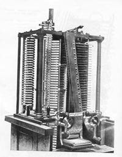 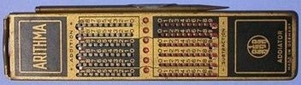 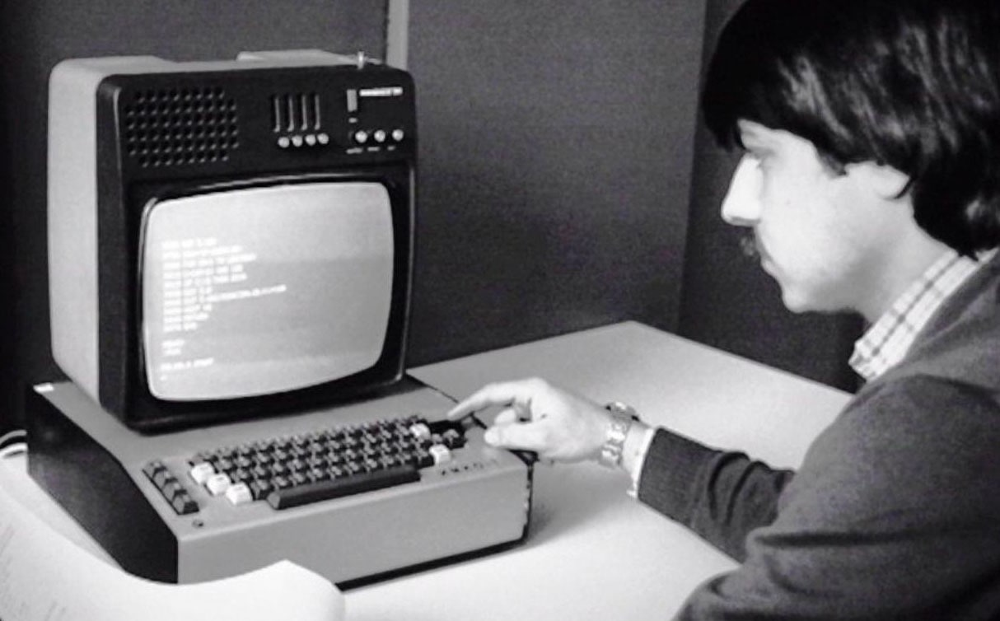 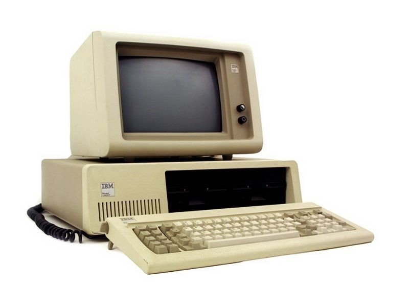 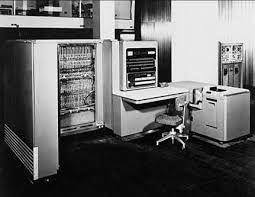
Историята на компютрите:
Предмеханичен етап
По време този етап е най-дълъг - започва от дълбока древност и продължава до ХVII в.
Най-древните инструменти за смятане
Най-древният инструмент за смятане, който cамата природа е предоставила на разположение на човека, е неговата собствена ръка.
Добре била известна пръстовата система в Рим.
В средновековна Европа пълно описание на пръстовото смятане съставил ирландецът Беда Достопочтени.
От древността се употребява още един вид инструментално смятане - с помощта на дървени плочки с нарези. В средните векове те се използвали за отчитане и
събиране на данъци.
Други народи - китайци, перси, индийци, перуанци - използвали за представяне на числата и смятане връвчици с възелчета.
Всички тези „инструменти” не можели да удовлетворят нарастващите във връзка с развитието на търговията потребности от средства за смятане.
Ето защо било наложително да се изобретят нови и по-ефективни уреди за по-бързо и лесно смятане.
Механичен етап
През Средновековието редица изобретатели обмислят създаването на машина, способна да извършва аритметични действия по механичен път.
В националната библиотека в Мадрид са намерени ръкописи на Леонардо да Винчи (1452 - 1519), сред които има и скица на сумиращо устройство.
Възпроизведената по тези скици от фирмата IBM машина се оказала напълно работоспособна.
За родоначалник на механичния етап се смята френския математик Блез Паскал. През 1641г. той конструира първата механична сумираща машина достигнала до наши дни.
Тази машина се наричала аритмометър. В негова чест днес един от езиците за програмиране носи неговото име.
Линийката на Уат е първата универсална логаритмическа линийка, способна да извършва различни инженерни пресмятания.
Тя била конструирана през 1779 година от английския механик Дж.Уат. Тя получила името "сохо-линийка", по името на местност близо до Бирмингам, където работел Уат.
От средата на XVII век с неголям промеждутък били създадени Аритметическата машина на Паскал и машината на Бабидж.
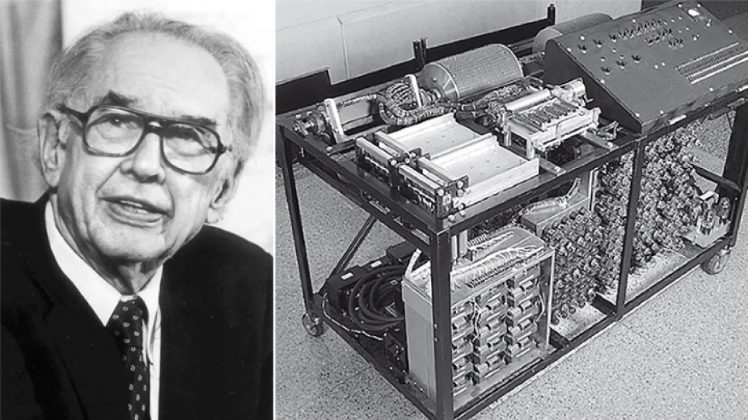 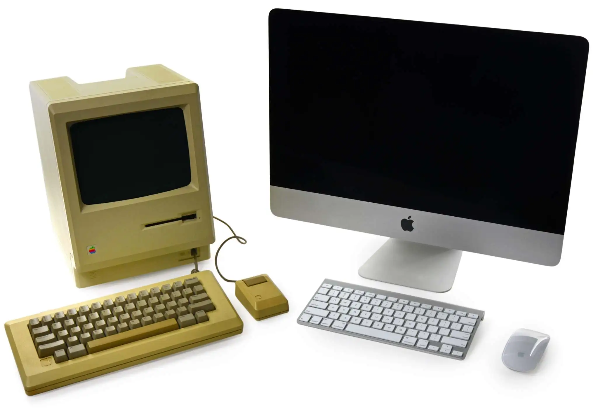 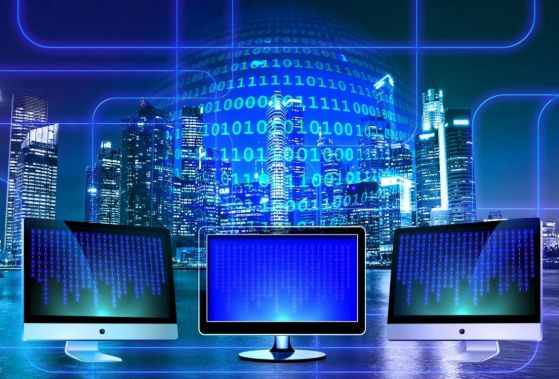 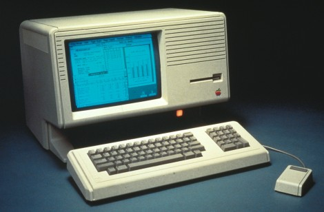 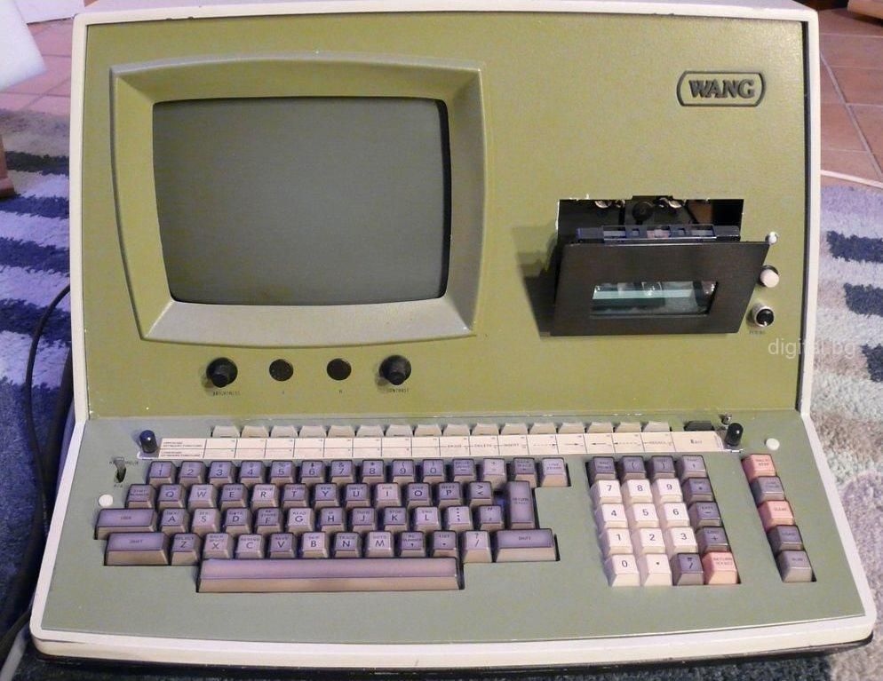
Аналитичната машина на Бабидж
През 1834 година англичанинът Чарлз Бабидж изобретява аналитическата машина.Тя се състояла от "склад" за съхраняване на числата, "мелници" - за производство
(извършване) на аритметическите действия над числата ("аритметическо устройство"), устройство,управляващо в определена последователност операциите на
машината ("устройство за управление"), устройство за вход и изход на данни. Аналитичната машина не била построена. Но Бабидж направил повече от 200 чертежа
на нейни различни възли и около 30 варианта на общите схеми на машината.
Аналитичната машина на Бабидж е първия първообраз на съвременните компютри.
Електромеханичен етап
17 век - Паскал и Лайбниц разработват някои от първите примитивни изчислителни машини на механичен принцип.
Средата на 19 век - Чарлс Бедижд проектира “аналитична машина” - механично устройство, обединяващо вход от перфокарти, памет, изчислителен блок,
автоматичен изход и което е най важно - последователност от инструкции, които управляват неговото функциониране. В тази дейност Бебидж е подпомаган от
Ада Байрон - дъщеря на лорд Байрон. Програмният език Ада е наречен на нейно име.
1936 г. - английският математик А. Тюринг доказва, че всеки алгоритъм може да бъде реализиран с помощта на дискретен автомат.
1939 г. - Джон Атанасов създава първата електронно изчислителна машина. Тя е с 300 електронни лампи. Има вход и изход. Има памет и работи.... .
В създаването и са използвани няколко новаторски принципа:
• Двоична бройна система;
• Регенеративна памет;
• Логически схеми и електронни компоненти за обработка и съхранение на данните.
1946 г. - Джон фон Нейман публикова статията "Предварително обсъждане логическата конструкция на ЕИМ",в която представя основните принципи за създаване на компютър.
1946 г. - учени от Университета в Пенсилвания обявяват създаването на първия многоцелеви компютър в света. Той се нарича ENIAC. Построен е на принципите
открити от Джон Атанасов.
1957 г. - Б. Нойс и Г.Мур създават първата в света компания за производство на полупроводникови прибори. След десет години те създават фирмата "Intel Corporation".
1973г. - след дългогодишно съдебно разбирателство, за това кой пръв е създал компютъра, съдът се произнася в полза на Джон Атанасов, който е обявен за бащата на компютъра.
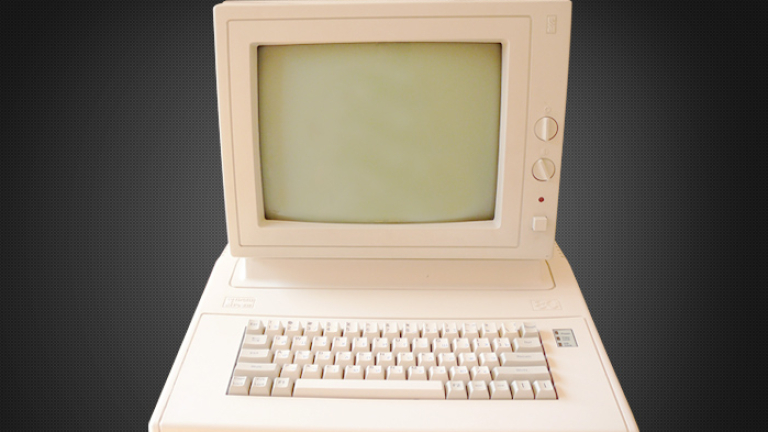 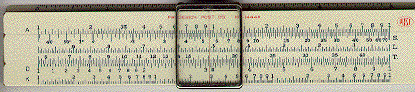 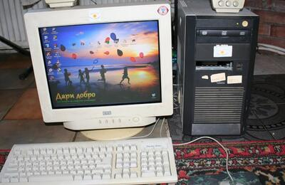 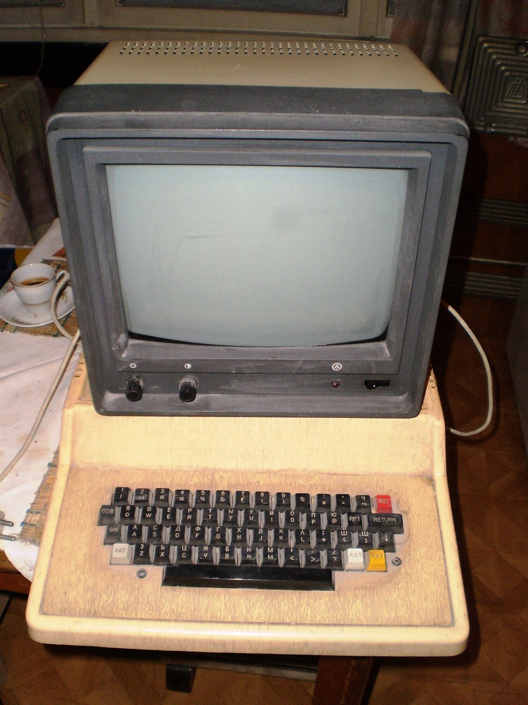 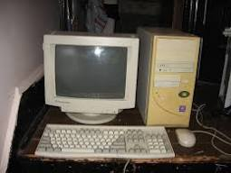
Автор: Мирослав Радославов Михнев,
5 клас, МГ "Баба Тонка", град Русе